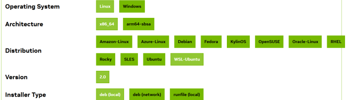
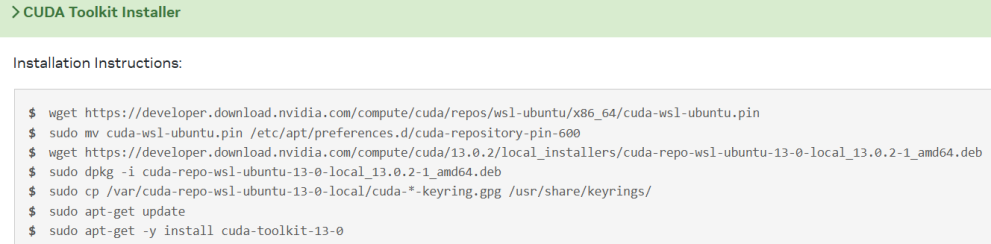
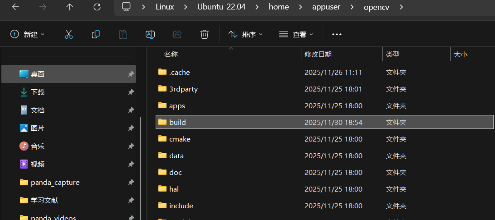
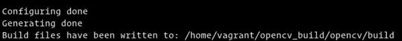
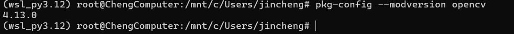

安装支持CUDA加速的Opencv
1 配置ffmepg
1.1 因为我要在opencv中配置ffmpeg, 所以先配置好ffmpeg
sudo apt-install ffmpeg
1.2 安装必要的库
sudo apt-get update
sudo apt-get install build-essential
sudo apt-get install cmake git libgtk2.0-dev pkg-config libavcodec-dev libavformat-dev libswscale-dev
sudo apt-get install python-dev python-numpy libtbb2 libtbb-dev libjpeg-dev libpng-dev libtiff-dev libjasper-dev libdc1394-22-dev
sudo apt-get install cmake git libgtk2.0-dev pkg-config libavcodec-dev libavformat-dev libswscale-dev
2 安装Cmake
2.1 安装
sudo apt-get install cmake
2.2 安装其他依赖项
sudo apt-get install build-essential libgtk2.0-dev libavcodec-dev libavformat-dev \
libjpeg-dev libswscale-dev libtiff5-dev libgtk2.0-dev pkg-config
3 安装OpenCV，opencv-contrib, GPU驱动
3.1 下载opencv以及opencv-contrib
git clone https://github.com/opencv/opencv.git
git clone https://github.com/opencv/opencv_contrib.git
3.2 安装英伟达驱动，其实我认为不需要安装，因为wsl和windows是共用GPU，但是可以创建NVIDIA文件夹将cuda，cuDNN和Tenssort放进去
cd ~
mkdir NVIDIA && cd NVIDIA
sudo chmod +x *.run
sudo chmod +x *.deb
sudo ./NVIDIA-Linux-x86_64-550.54.14.run
3.3 检查驱动
nvidia-smi

4 安装cuda
4.1 浏览器搜索cuda，找到对应的版本按照官方的方式安装即可


wget https://developer.download.nvidia.com/compute/cuda/repos/wsl-ubuntu/x86_64/cuda-wsl-ubuntu.pin
sudo mv cuda-wsl-ubuntu.pin /etc/apt/preferences.d/cuda-repository-pin-600
wget https://developer.download.nvidia.com/compute/cuda/13.0.2/local_installers/cuda-repo-wsl-ubuntu-13-0-local_13.0.2-1_amd64.deb
sudo dpkg -i cuda-repo-wsl-ubuntu-13-0-local_13.0.2-1_amd64.deb
sudo cp /var/cuda-repo-wsl-ubuntu-13-0-local/cuda-*-keyring.gpg /usr/share/keyrings/
sudo apt-get update
sudo apt-get -y install cuda-toolkit-13-0
4.2 建立连接确定
vim ~/.bashrc
在末尾添加：
export LD_LIBRARY_PATH=/usr/local/cuda/lib64
export PATH=$PATH:/usr/local/cuda/bin
刷新环境变量
source ~/.bashrc
查看版本信息
nvcc -V
5 安装CuDNN
也是选择对应的版本


wget https://developer.download.nvidia.com/compute/cudnn/9.17.0/local_installers/cudnn-local-repo-ubuntu2204-9.17.0_1.0-1_amd64.deb
sudo dpkg -i cudnn-local-repo-ubuntu2204-9.17.0_1.0-1_amd64.deb
sudo cp /var/cudnn-local-repo-ubuntu2204-9.17.0/cudnn-*-keyring.gpg /usr/share/keyrings/
sudo apt-get update
sudo apt-get -y install cudnn
sudo apt-get -y install cudnn9-cuda-12
sudo apt-get -y install cudnn9-cuda-13
6 安装Tensorrt
cd ~/NVIDIA # 回到NVIDIA路径下
sudo dpkg -i nv-tensorrt-local-repo-ubuntu2204-8.5.3-cuda-11.8_1.0-1_amd64.deb
sudo cp /var/nv-tensorrt-local-repo-ubuntu2204-8.5.3-cuda-11.8/*-keyring.gpg /usr/share/keyrings/ # 最好直接复制终端提示
sudo apt-get update
sudo apt-get install tensorrt
验证安装
dpkg -l | grep TensorRT
7 安装Opencv库(选择性安装)
7.1 通用工具：
sudo apt install build-essential cmake pkg-config unzip yasm git checkinstall
7.2 图像I/O库：
sudo apt install libjpeg-dev libpng-dev libtiff-dev
7.3 视频/音频库 - FFMPEG、GSTREAMER、x264 等：
sudo apt install libavcodec-dev libavformat-dev libswscale-dev libavresample-dev
sudo apt install libgstreamer1.0-dev libgstreamer-plugins-base1.0-dev
sudo apt install libxvidcore-dev x264 libx264-dev libfaac-dev libmp3lame-dev libtheora-dev
sudo apt install libfaac-dev libmp3lame-dev libvorbis-dev
7.4 OpenCore - 自适应多速率窄带 (AMRNB) 和宽带 (AMRWB) 语音编解码器：
sudo apt install libopencore-amrnb-dev libopencore-amrwb-dev
7.5 CPU 并行库 C++ ：
sudo apt-get install libatlas-base-dev gfortran
8 配置Opencv
8.1 进入opencv目录，创建一个build文件夹并进入
mkdir build && cd build

8.2 进行cmake
cmake -D CMAKE_BUILD_TYPE=RELEASE \
-D CMAKE_INSTALL_PREFIX=/usr/local \
-D WITH_CUDA=ON \
-D WITH_CUDNN=ON \
-D WITH_CUBLAS=1 \
-D ENABLE_FAST_MATH=1 \
-D CUDA_FAST_MATH=1 \
-D CUDA_ARCH_BIN=8.9 \ #按照自己电脑的GPU更改
-D WITH_FFMPEG=ON \
-D OPENCV_GENERATE_PKGCONFIG=ON \
-D OPENCV_PC_FILE_NAME=opencv.pc \
-D OPENCV_ENABLE_NONFREE=ON \
-D OPENCV_EXTRA_MODULES_PATH=../../opencv_contrib/modules \
-D BUILD_opencv_python3=ON \
#根据自己的python环境进行配置
-D PYTHON3_EXECUTABLE=/root/miniconda3/envs/wsl_py3.12/bin/python \
-D PYTHON3_INCLUDE_DIR=/root/miniconda3/envs/wsl_py3.12/include/python3.12 \
-D PYTHON3_LIBRARY=/root/miniconda3/envs/wsl_py3.12/lib/libpython3.12.so \
-D PYTHON3_PACKAGES_PATH=/root/miniconda3/envs/wsl_py3.12/lib/python3.12/site-packages \
..
出现这个编译成功

cmake之后进行make编译
sudo make -j8
完成之后再进行安装
sudo make install
8.3 配置环境
sudo vim /etc/ld.so.conf
在里面加上一行/usr/local/lib,这个是opencv的安装路径
include /etc/ld.so.conf.d/*.conf
/usr/local/lib
运行
sudo ldconfig
然后修改bash.bashrc文件
sudo vim /etc/bash.bashrc
在结尾加入
PKG_CONFIG_PATH=$PKG_CONFIG_PATH:/usr/local/lib/pkgconfig
export PKG_CONFIG_PATH
然后进行source
source /etc/bash.bashrc
检验安装
用 pkg-config --modversion opencv4 或者 pkg-config --modversion opencv 检测OPenCV4或OPenCV的安装版本。
pkg-config --modversion opencv
显示opencv版本号表示安装成功
